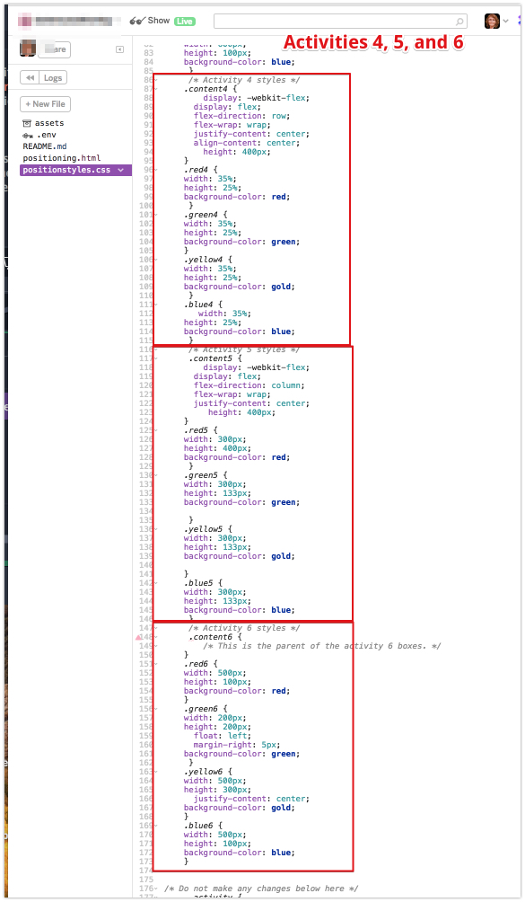
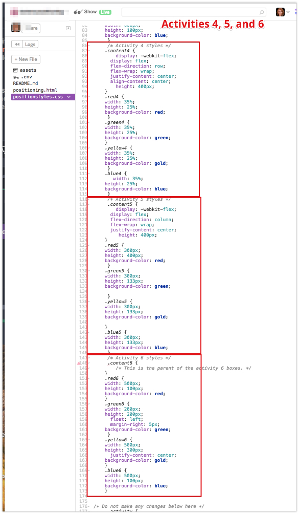

CSS Positioning Activity
Activity Instructions
Here is another Sister A step by step video to help understand the directions:
Step 01
Copy the html below and paste it into a new file in your editor. Name it positioning.html. Copy the CSS into another file called positionstyles.css.
Step 02
Modify the css to make the boxes in the html match the patterns in the images for each activity.
Step 03
Open your positioning.html website in your browser to make sure the web page displays correctly. Pay special attention to whether your styles are all displaying. Once verified, go to the next page to access "W08.03 CSS Positioning Activity" and click "Upload" to submit the URL to your page.
Your URL will be a little longer this time around. You will start with your normal URL, but this time we don't want the index.html file...we want positioning.html, so you URL should reflect that. For example if I normally submitted http://thompsonw16.handcraft.com as my URL, for this assignment I would submit http://thompsonw16.handcraft.com/positioning.html
Grading
This activity will be graded using the following rubric:
- Students completed the assignment as outlined above. (12 points)
Tips
- Don't overuse position. At first it might seem to be the answer to your positioning prayers, but it can quickly become a nightmare if overused. Try to solve layout problems with other methods first...and fallback to position only if they don't work.
- Remember that margin is a great way to shift things around short distances. (and margin-top: -50px; would move an element up by 50px)
- When using float remember that the element that you are floating must come before the other elements in the HTML. Also remember to clear your floats when you want things to stop floating.
- Flexbox is a great way to position elements. Most of these can be most easily solved by using it. Remember that to use flexbox find the elements you want to adjust, then find their parent. Use
display: flex;on that parent. Also, here a couple of good resources to help you with Flexbox: CSS-Tricks Guide to Flexbox, and Flexbox Froggy - You should be able to solve all of these positioning problems without modifying the HTML. If you find yourself tempted to tweak the HTML you are probably working too hard :)
- If you are struggling with an activity, start by simply making the boxes the right size and shape. It will often help you to see where to go next.
- ...and did I mention that you should not modify the HTML? I was pretty serious about that :)
- The ONLY thing you should do in the .html file is to create an <h1>Your first name your last name WDD100-(your section # here)</h1> just before the </body> so that your name will show on the page.
<!DOCTYPE html>
<html lang="en">
<!-- HTML - Name: positioning.html -->
<head>
<title>Positioning Activity</title>
<link rel="stylesheet" type="text/css" href="positionstyles.css" />
</head>
<body>
<div class="activity">
<h2>WDD 100 positioning exercises</h2>
For each activity match make the boxes match the image by modifying the stylesheet.
</div>
<div class="activity">
<h2>Activity 1</h2>
<section class="hint">
<input type="checkbox" >
<i></i>
<h3>Hint 1</h3>
<div>
<p>For this one you need to identify what the flex parent (container) is and set
display: flex on it...that's really about it!</p>
<h4>Properties used:</h4>
<ul>
<li>display: flex;</li>
</ul>
</div>
</section>
<p>Make the squares move left across the screen horizontally like in
<a href="https://byui-cit.github.io/wdd100/images/Example1.png" target="_blank">
this </a> image.
</p>
<div class="content1" >
<div class="red1" ></div>
<div class="green1" ></div>
<div class="yellow1"></div>
<div class="blue1"></div>
</div> </div>
<div class="activity">
<h2>Activity 2</h2>
<section class="hint">
<input type="checkbox" >
<h3>Hint 2</h3>
<i></i>
<div>
<p>Remember that there are 2 ways to shift elements around slightly on the page.
Margins and position:relative. Either would work for this. If you choose margin,
remember that you can use an <em>negative</em> margin. (ie margin-top: -20px;)</p>
<h4>Properties used:</h4>
<ul>
<li>margin-top, margin-left</li>
<li>...or...</li>
<li>position:relative;
left:, top: </li>
</ul>
</div>
</section>
<p>Overlap and stagger the squares like in
<a href="https://byui-cit.github.io/wdd100/images/Example2.png" target="_blank">
this</a>
image.</p>
<div class="content2" >
<div class="red2" ></div>
<div class="green2" ></div>
<div class="yellow2"></div>
<div class="blue2"></div>
</div> </div>
<div class="activity">
<h2>Activity 3</h2>
<section class="hint">
<input type="checkbox" >
<h3>Hint 3</h3>
<i></i>
<div>
<p>This one is going to be best solved with Flexbox again (though float: or
display:inline-block could be made to work as well). Remember to make the boxes the
right width first...then start moving them around. </p>
<h4>Properties used:</h4>
<ul>
<li>display:flex;</li>
<li>flex-flow:</li>
<li>justify-content:</li>
</ul>
</div>
</section>
Create the 2 column layout like in
<a href="https://byui-cit.github.io/wdd100/images/example3-flex.png" target="_blank">
this</a> image.
<div class="content3" >
<div class="red3" ></div>
<div class="green3" ></div>
<div class="yellow3"></div>
<div class="blue3"></div>
</div> </div>
<div class="activity">
<h2>Activity 4</h2>
<section class="hint">
<input type="checkbox" >
<h3>Hint 4</h3>
<i></i>
<div>
<p>For this one you will have to use the flex property on your flex children
(green, yellow, and blue) for it to work right. </p>
<h4>Properties used:</h4>
<ul>
<li>display:flex;</li>
<li>flex-flow:</li>
<li>justify-content:</li>
<li>align-content:</li>
<li>flex:</li>
</ul>
</div>
</section>
Duplicate the positioning in
<a href="https://byui-cit.github.io/wdd100/images/example4a-flex.png" target="_blank">
this</a> image. Note! The centering is part of the problem with this one. Your solution
should have the 4 boxes centered vertically and horizontally.
<div class="content4" >
<div class="red4" ></div>
<div class="green4" ></div>
<div class="yellow4"></div>
<div class="blue4"></div>
</div> </div>
<div class="activity">
<h2>Activity 5</h2>
<section class="hint">
<input type="checkbox" >
<h3>Hint 5</h3>
<i></i>
<div>
<p>This one is a bit tricky. Remember that flex-flow can be set to <code>column wrap</code>
as well as <code>row wrap</code> Setting the widths first will also be helpful, you won't
really be able to specify the heights directly...but flex can handle that for you if you
set it up right. </p>
<h4>Properties used:</h4>
<ul>
<li>display:flex;</li>
<li>flex-flow:</li>
<li>flex:</li>
</ul>
</div>
</section>
Duplicate the positioning in
<a href="https://byui-cit.github.io/wdd100/images/example5-flex.png" target="_blank">
this</a> image.
<div class="content5" >
<div class="red5" ></div>
<div class="green5" ></div>
<div class="yellow5"></div>
<div class="blue5"></div>
</div> </div>
<div class="activity">
<h2>Activity 6</h2>
<section class="hint">
<input type="checkbox" >
<h3>Hint 6</h3>
<i></i>
<div>
<p>Flexbox is <strong>not</strong> the right way to do this. In fact there is only one
way to really do that...and that is with float. Remember that we float the thing we want
the text to wrap around. Also remember to start by making all the shapes the right size
and shape.</p>
<h4>Properties used:</h4>
<ul>
<li>float: left;</li>
</ul>
</div>
</section>
Wrap the text around the square like in
<a href="https://byui-cit.github.io/wdd100/images/Example6.png" target="_blank">
this</a> image.
<div class="content6" >
<div class="red6" ></div>
<div class="green6" ></div>
<div class="yellow6">
Step 01: Continue creating the main page for your chosen web site by modifying the
CSS file you created in week 3's Adding Classes and IDs to Your Website assignment.
This week, you will position all of the content on your main page using the CSS
positioning techniques taught in KhanAcademy. When you are done, your webpage
layout should reflect what you outlined in the wireframe. <br />
If you have changed your mind on how you want the content of your main page
laid out, take an opportunity to update your wireframe before completing this
assignment (it is much easier to experiment with different layouts in a wireframe
than it is to do so by modifying the CSS). Also, if you find that you are having
trouble with using CSS positioning, feel free to review the concepts at the learn
layout site: http://learnlayout.com/. You should be able to apply these principles
to your site. For futher help, refer back to the Max Design site used in the beginning
of the course for an example of how to implement your site design.</div>
<div class="blue6"></div>
</div> </div>
</body>
</html>
{kind=link}
{kind=link}
{kind=link}
{kind=link}
{kind=link}
{kind=link}
.content1 {
/* This is the parent of the activity 1 boxes. */ }
.red1 {
width: 100px;
height: 100px;
background-color: red;
}
.green1 {
width: 100px;
height: 100px;
background-color: green;
}
.yellow1 {
width: 100px;
height: 100px;
background-color: gold;
}
.blue1 {
width: 100px;
height: 100px;
background-color: blue;
}
/* Activity 2 styles */
.content2 {
/* This is the parent of the activity 2 boxes. */
}
.red2 {
width: 100px;
height: 100px;
background-color: red;
}
.green2 {
width: 100px;
height: 100px;
background-color: green;
}
.yellow2 {
width: 100px;
height: 100px;
background-color: gold;
}
.blue2 {
width: 100px;
height: 100px;
background-color: blue;
}
/* Activity 3 styles */
.content3 {
/* This is the parent of the activity 3 boxes. */
}
.red3 {
width: 100px;
height: 100px;
background-color: red;
}
.green3 {
width: 100px;
height: 100px;
background-color: green;
}
.yellow3 {
width: 100px;
height: 100px;
background-color: gold;
}
.blue3 {
width: 100px;
height: 100px;
background-color: blue;
}
/* Activity 4 styles */
.content4 {
/* This is the parent of the activity 4 boxes. */
height: 400px;
}
.red4 {
width: 100px;
height: 100px;
background-color: red;
}
.green4 {
width: 100px;
height: 100px;
background-color: green;
}
.yellow4 {
width: 100px;
height: 100px;
background-color: gold;
}
.blue4 {
width: 100px;
height: 100px;
background-color: blue;
}
/* Activity 5 styles */
.content5 {
/* This is the parent of the activity 5 boxes. */
height: 400px;
}
.red5 {
width: 100px;
height: 100px;
background-color: red;
}
.green5 {
width: 100px;
height: 100px;
background-color: green;
}
.yellow5 {
width: 100px;
height: 100px;
background-color: gold;
}
.blue5 {
width: 100px;
height: 100px;
background-color: blue;
}
/* Activity 6 styles */
.content6 {
/* This is the parent of the activity 6 boxes. */
}
.red6 {
width: 100px;
height: 100px;
background-color: red;
}
.green6 {
width: 100px;
height: 100px;
background-color: green;
}
.yellow6 {
width: 100px;
height: 100px;
background-color: gold;
}
.blue6 {
width: 100px;
height: 100px;
background-color: blue;
}
/* Do not make any changes below here */
.activity {
width: 600px;
margin: 20px auto;
font-family: Arial, sans-serif;
border: 1px solid black;
padding: 10px;
clear:both;
overflow: auto;
}
.hint {
border: 1px solid grey;
background: #e0e0e0;
padding: .5em;
position: relative;
margin: 1em 0;
}
.hint h3 {
margin: 0;
}
.hint:hover {
background: #d0d0d0;
}
.hint > div {
display: none;
}
.hint input[type=checkbox] {
position: absolute;
width: 100%;
height: 100%;
opacity: 0;
z-index: 1;
cursor: pointer;
}
.hint input[type=checkbox]:checked ~ div {
display: block;
}
.hint i {
position: absolute;
transform: translate(-6px, 0);
margin-top: 16px;
right: 10px;
top: -3px;
}
.hint i:before, .hint i:after {
content: "";
position: absolute;
background-color: black;
width: 3px;
height: 9px;
}
.hint i:before {
transform: translate(2px, 0) rotate(45deg);
}
.hint i:after {
transform: translate(-2px, 0) rotate(-45deg);
}
.hint input[type=checkbox]:checked ~ i:before {
transform: translate(-2px, 0) rotate(45deg);
}
.hint input[type=checkbox]:checked ~ i:after { transform: translate(2px, 0) rotate(-45deg);
}
CSS Positioning Activity Examples:
.jpg) 
